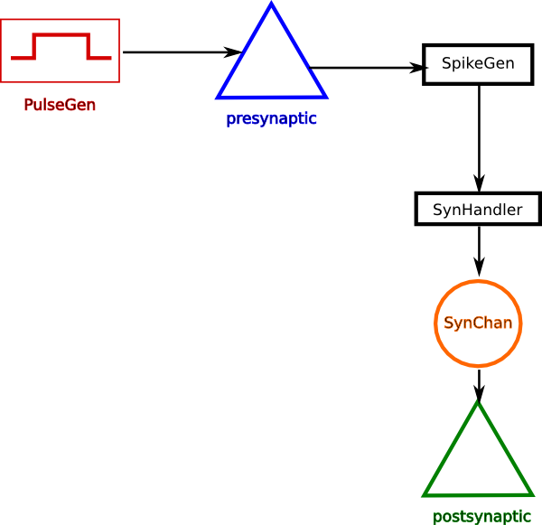
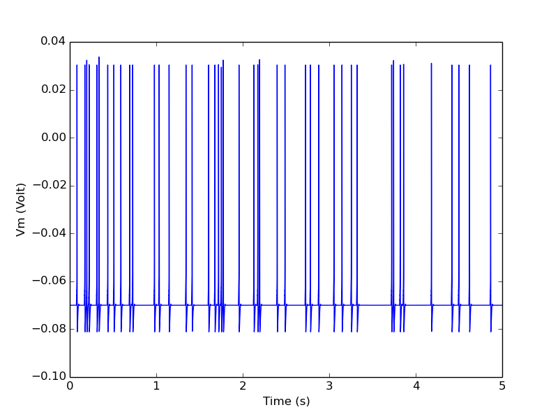

Simple Examples¶
How to run these examplesConnecting two cells via a synapse¶
Below is the connectivity diagram for setting up a synaptic connection from one neuron to another. The PulseGen object is there for stimulating the presynaptic cell as part of experimental setup. The cells are defined as single-compartments with Hodgkin-Huxley type Na+ and K+ channels.
{kind=link}

- twocells.create_model()[source]¶
Create two single compartmental neurons, neuron_A is the presynaptic neuron and neuron_B is the postsynaptic neuron.
1. The presynaptic cell's Vm is monitored by a SpikeGen object. Whenever the Vm crosses the threshold of the spikegen, it sends out a spike event message.
2. This is event message is received by a SynHandler, which passes the event as activation parameter to a SynChan object.
3. The SynChan, which is connected to the postsynaptic neuron as a channel, updates its conductance based on the activation parameter.
4. The change in conductance due to a spike may evoke an action potential in the post synaptic neuron.
Providing random input to a cell¶
- randomspike.create_cell()[source]¶
Create a single-compartment Hodgking-Huxley neuron with a synaptic channel.
This uses the
ionchannel.create_1comp_neuron()function for model creation.Returns a dict containing the neuron, the synchan and the synhandler for accessing the synapse,
- randomspike.example()[source]¶
The RandSpike class generates spike events from a Poisson process and sends out a trigger via its spikeOut message. It is very common to approximate the spiking in many neurons as a Poisson process, i.e., the probability of k spikes in any interval t is given by the Poisson distribution:
exp(-ut)(ut)^k/k!
for k = 0, 1, 2, ... u is the rate of spiking (the mean of the Poisson distribution). See wikipedia <http:`//en.wikipedia.org/wiki/Poisson_process``>`__ for details.
Many cortical neuron types spontaneously fire action potentials. These are called ectopic spikes. In this example we simulate this with a RandSpike object with rate 10 spikes/s and send this to a single compartmental neuron via a synapse.
In this model the synaptic conductance is set so high that each incoming spike evokes an action potential.
- randomspike.main()[source]¶
This is an example of simulating random events from a Poisson process and applying the event as spike input to a single-compartmental Hodgekin-Huxley type neuron model.
{kind=link}

Plastic synapse¶
- STDP.main()[source]¶
Connect two cells via a plastic synapse (STDPSynHandler). Induce spikes spearated by varying intervals, in the pre and post synaptic cells. Plot the synaptic weight change for different intervals between the spike-pairs. This ia a pseudo-STDP protocol and we get the STDP rule.
On the command-line, in moose-examples/snippets directory, run
python STDP.py
- STDP.make_neuron_spike(nrnidx, I=1e-07, duration=0.001)[source]¶
Inject a brief current pulse to make a neuron spike
Synapse Handler for Spikes¶
- RandSpikeStats.main()[source]¶
This snippet shows the use of several objects. This snippet sets up a StimulusTable to control a RandSpike which sends its outputs to two places:
to a SimpleSynHandler on an IntFire, which is used to monitor spike arrival, and to various Stats objects.
I record and plot each of these. The StimulusTable has a sine-wave waveform
Recurrent integrate-and-fire network¶
- recurrentIntFire.make_network()[source]¶
This snippet sets up a recurrent network of IntFire objects, using SimpleSynHandlers to deal with spiking events. It isn't very satisfactory as activity runs down after a while. It is a good example for using the IntFire, setting up random connectivity, and using SynHandlers.
Recurrent integrate-and-fire network with plasticity¶
- recurrentLIF.make_network()[source]¶
This snippet sets up a recurrent network of LIF objects, using SimpleSynHandlers to deal with spiking events. It isn't very satisfactory as activity runs down after a while. It is a good example for using the LIF, setting up random connectivity, and using SynHandlers.
Demonstration Models¶
- compartment_net.create_network(size=2)[source]¶
Create a network containing two neuronal populations, popA and popB and connect them up.
Parameters¶
- size: int
size of each population
- compartment_net.create_population(container, size, gbarSyn=1e-10)[source]¶
Create a population of size single compartmental neurons with Na+ and K+ channels and attached synapse and spike generators.
The SpikeGen and SynChan objects connected to these can act as plug points for setting up synapses later.
Parameters¶
- container: moose element
Container of the population. A compartment vector called neuron will be created inside this container.
- size: int
This is the number of elements in the compartment vector
- gbarSyn: float or sequence of floats
Peak synaptic conductance. If gbarSyn is a float, every synapse will have this peak conductance. If gbarSyn is a sequence of floats, it must be of size length, and the entries are assigned to corresponding elements in the synaptic channel vector.
Returns¶
dict: dict of model components
- compartment_net.main(simtime=0.1)[source]¶
This example illustrates how to create a network of single compartmental neurons connected via alpha synapses. It also shows the use of SynChan class.
- compartment_net.make_synapses(spikegen, synhandler, connprob=1.0, delay=0.005)[source]¶
Create synapses from spikegen array to synchan array.
Parameters¶
- spikegen: vec of SpikGen elements
Spike generators from neurons.
- synhandler: vec of SynHandler elements
Handles presynaptic spike event inputs to synchans.
- connprob: float in range (0, 1]
connection probability between any two neurons.
- delay: float (mean delay of synaptic transmission)
Individual delays are normally distributed with sd=0.1*mean.
Following, is a demo to create a network of single compartmental neurons connected via alpha synapses. This is same as compartment_net.py except that we avoid ematrix and use single melements.
- compartment_net_no_array.assign_clocks(model_container_list, simdt, plotdt)[source]¶
Assign clocks to elements under the listed paths.
This should be called only after all model components have been created. Anything created after this will not be scheduled.
- compartment_net_no_array.create_population(container, size)[source]¶
Create a population of size single compartmental neurons with Na and K channels. Also create SpikeGen objects and SynChan objects connected to these which can act as plug points for setting up synapses later.
- compartment_net_no_array.main()[source]¶
A demo to create a network of single compartmental neurons connected via alpha synapses. This is same as compartment_net.py except that we avoid ematrix and use single melements.
- compartment_net_no_array.make_synapses(spikegen, synchan, delay=0.005)[source]¶
Create synapses from spikegens to synchans in a manner similar to OneToAll connection.
- spikegen: list of spikegen objects
These are sources of synaptic event messages.
- synchan: list of synchan objects
These are the targets of the synaptic event messages.
- delay: mean delay of synaptic transmission.
Individual delays are normally distributed with sd=0.1*mean.
Building Models¶
- synapse_tutorial.main()[source]¶
In this example we walk through creation of a vector of IntFire elements and setting up synaptic connection between them. Synapse on IntFire elements is an example of ElementField - elements that do not exist on their own, but only as part of another element. This example also illustrates various operations on vec objects and ElementFields.